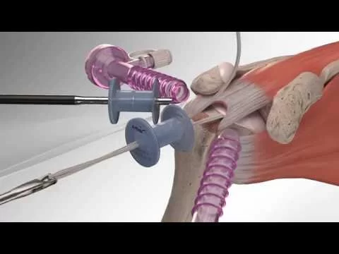

Shoulder Surgery
Advanced shoulder surgery treatments at Germanten Hospitals
Shoulder Surgery

SHOULDER SURGERY
Your shoulder is the most flexible joint in your body. It allows you to place and rotate your arm in many positions in front, above, to the side, and behind your body. This flexibility also makes your shoulder susceptible to instability and injury. Depending on the nature of the problem, nonsurgical methods of treatment often are recommended before surgery. However, in some instances, delaying the surgical repair of a shoulder can increase the likelihood that the problem will be more difficult to treat later. Early, correct diagnosis and treatment of shoulder problems can make a significant difference in the long run.
FRACTURED COLLARBONE
A fractured collarbone and acromioclavicular separation are common injuries of children and others who fall on the side of their shoulder when playing. Most of these injuries are treated nonsurgically with slings or splints. Severe displaced fractures or acromioclavicular joint separation may require surgical repair.
SHOULDER REPLACEMENT
Shoulder replacement is recommended for patients with painful shoulders and limited motion. The treatment options are either replacement of the head of the bone or replacement of the entire socket. Dr Mir Jawad Zar Khan orthopaedic surgeon will discuss with you the best option.
PREVENTION OF FUTURE PROBLEMS
It is important that you continue a shoulder exercise program with daily stretching and strengthening. In general, patients who faithfully comply with the therapies and exercises prescribed by their orthopaedic surgeon and physical therapist will have the best medical outcome after surgery.
Dr Mir Jawad zar Khan, orthopaedic surgeon is a medical doctor with extensive training in the diagnosis and nonsurgical and surgical treatment of the Shoulder
Latest News


Dr. Mir Jawad Zar Khan Awarded By The Hon'ble 14th President Of India Shri Ram Nath Kovind
Read More »Recent Post


Dr. Mir Jawad Zar Khan
Senior Orthopedic Surgeon